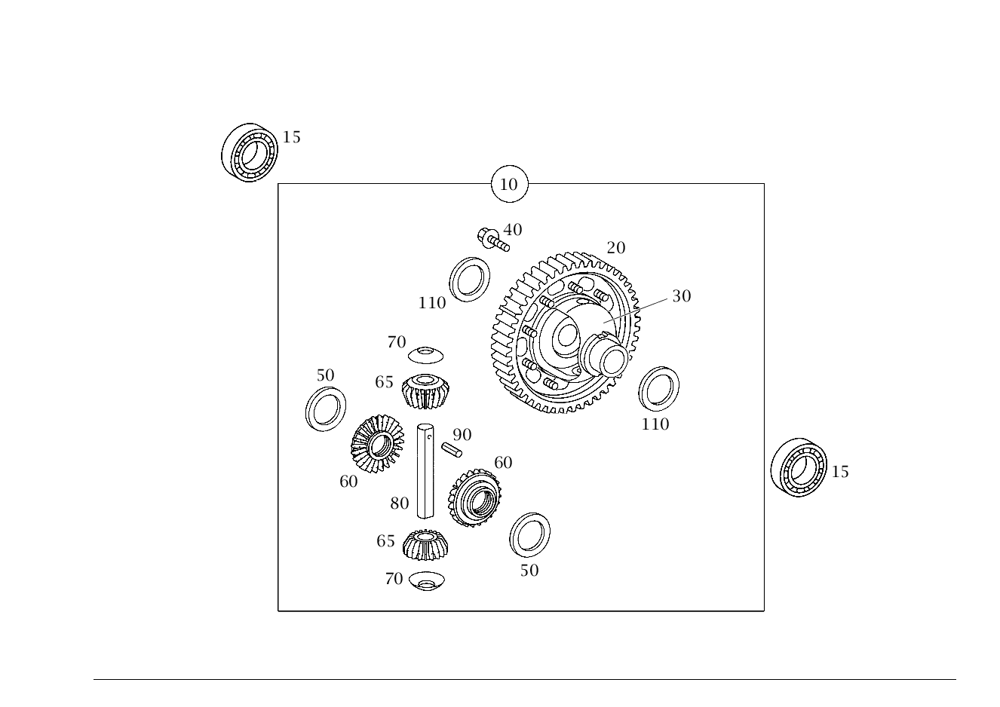

| № | Артикул | Название | Кол. | Примечание |
|---|---|---|---|---|
| 10 | A 168 360 12 04 | - ДИФФЕРЕНЦИАЛ | 1 | |
| 10 | A 169 360 05 04 | - Дифференциал (DIFFERENTIAL) | 1 | |
| 15 | A 002 980 68 02 | - Кон. роликоподшипник | 2 | |
| 20 | A 168 360 54 08 | - ШЕСТЕРНЯ | 1 | |
| 30 | A 168 368 00 01 | - Корпус дифференциала | 1 | |
| 40 | N 914140 010008 | - Винт (SCREW) | 9 | |
| 50 | A 168 368 28 52 | - Компенсационная шайба (SHIM) | 1 | КОРОБКА ДИФФЕРЕНЦИАЛА 1.70MM |
| 50 | A 168 368 29 52 | - ШАЙБА РЕГУЛИРОВОЧНАЯ | 1 | КОРОБКА ДИФФЕРЕНЦИАЛА 1.75MM |
| 50 | A 168 368 30 52 | - Компенсационная шайба (SHIM) | 1 | КОРОБКА ДИФФЕРЕНЦИАЛА 1.80MM |
| 50 | A 168 368 31 52 | - ШАЙБА РЕГУЛИРОВОЧНАЯ | 1 | КОРОБКА ДИФФЕРЕНЦИАЛА 1.85MM |
| 50 | A 168 368 32 52 | - Компенсационная шайба (SHIM) | 1 | КОРОБКА ДИФФЕРЕНЦИАЛА 1.90MM |
| 50 | A 168 368 33 52 | - ШАЙБА РЕГУЛИРОВОЧНАЯ | 1 | КОРОБКА ДИФФЕРЕНЦИАЛА 1.95MM |
| 50 | A 168 368 35 52 | - ШАЙБА РЕГУЛИРОВОЧНАЯ | 1 | КОРОБКА ДИФФЕРЕНЦИАЛА 2.05MM |
| 50 | A 168 368 36 52 | - Компенсационная шайба (SHIM) | 1 | КОРОБКА ДИФФЕРЕНЦИАЛА 2.10MM |
| 50 | A 168 368 37 52 | - ШАЙБА РЕГУЛИРОВОЧНАЯ | 1 | КОРОБКА ДИФФЕРЕНЦИАЛА 2.15MM |
| 50 | A 168 368 38 52 | - Компенсационная шайба (SHIM) | 1 | КОРОБКА ДИФФЕРЕНЦИАЛА 2.20MM |
| 50 | A 168 368 39 52 | - ШАЙБА РЕГУЛИРОВОЧНАЯ | 1 | КОРОБКА ДИФФЕРЕНЦИАЛА 2.25MM |
| 50 | A 168 368 40 52 | - Компенсационная шайба (SHIM) | 1 | КОРОБКА ДИФФЕРЕНЦИАЛА 2.30MM |
| 50 | A 168 368 34 52 | - Компенсационная шайба (SHIM) | 1 | КОРОБКА ДИФФЕРЕНЦИАЛА 2.00 MM |
| 60 | A 168 368 01 15 | - Шестерня полуоси (DIFFERENTIAL SIDE GEAR) | 2 | |
| 65 | A 168 368 00 14 | - Сателлит дифференциала (DIFFERENTIAL PINION) | 2 | |
| 70 | A 168 368 01 24 | - Сферическая шайба (SPHERICAL WASHER) | 2 | |
| 80 | A 168 368 00 21 | - Палец | 1 | |
| 90 | N 001481 003506 | - Зажимная гильза (SPRING PIN) | 1 | |
| 110 | A 168 368 45 52 | - Компенсационная шайба (SHIM) | 1 | КАРТЕР СЦЕПЛЕНИЯ 0.96MM |
| 110 | A 168 368 46 52 | - Компенсационная шайба (SHIM) | 1 | КОРОБКА ДИФФЕРЕНЦИАЛА 1.00MM |
| 110 | A 168 368 47 52 | - Компенсационная шайба (SHIM) | 1 | КАРТЕР СЦЕПЛЕНИЯ 1.04MM |
| 110 | A 168 368 48 52 | - Компенсационная шайба (SHIM) | 1 | КАРТЕР СЦЕПЛЕНИЯ 1.08MM |
| 110 | A 168 368 49 52 | - Компенсационная шайба (SHIM) | 1 | КАРТЕР СЦЕПЛЕНИЯ 1.12MM |
| 110 | A 168 368 50 52 | - Компенсационная шайба (SHIM) | 1 | КАРТЕР СЦЕПЛЕНИЯ 1.16MM |
| 110 | A 168 368 51 52 | - Компенсационная шайба (SHIM) | 1 | КАРТЕР СЦЕПЛЕНИЯ 1.20MM |
| 110 | A 168 368 52 52 | - Компенсационная шайба (SHIM) | 1 | КАРТЕР СЦЕПЛЕНИЯ 1.24MM |
| 110 | A 168 368 53 52 | - Компенсационная шайба (SHIM) | 1 | КАРТЕР СЦЕПЛЕНИЯ 1.28MM |
| 110 | A 168 368 54 52 | - Компенсационная шайба (SHIM) | 1 | КАРТЕР СЦЕПЛЕНИЯ 1.32MM |
| 110 | A 168 368 55 52 | - Компенсационная шайба (SHIM) | 1 | КАРТЕР СЦЕПЛЕНИЯ 1.36MM |
| 110 | A 168 368 56 52 | - Компенсационная шайба (SHIM) | 1 | КАРТЕР СЦЕПЛЕНИЯ 1.40MM |
| 110 | A 168 368 57 52 | - Компенсационная шайба (SHIM) | 1 | КАРТЕР СЦЕПЛЕНИЯ 1.44MM |
| 110 | A 168 368 58 52 | - Компенсационная шайба (SHIM) | 1 | КАРТЕР СЦЕПЛЕНИЯ 1.48MM |
| 110 | A 168 368 59 52 | - Компенсационная шайба (SHIM) | 1 | КАРТЕР СЦЕПЛЕНИЯ 1.52MM |
| 110 | A 168 368 60 52 | - Компенсационная шайба (SHIM) | 1 | КАРТЕР СЦЕПЛЕНИЯ 1.56MM |
| 110 | A 168 368 61 52 | - Компенсационная шайба (SHIM) | 1 | КАРТЕР СЦЕПЛЕНИЯ 1.60MM |
| 110 | A 168 368 62 52 | - Компенсационная шайба (SHIM) | 1 | КАРТЕР СЦЕПЛЕНИЯ 1.64MM |
| 110 | A 168 368 63 52 | - Компенсационная шайба (SHIM) | 1 | КАРТЕР СЦЕПЛЕНИЯ 1.68MM |
| 110 | A 168 368 64 52 | - Компенсационная шайба (SHIM) | 1 | КАРТЕР СЦЕПЛЕНИЯ 1.72MM |
| 110 | A 168 368 65 52 | - Компенсационная шайба (SHIM) | 1 | КАРТЕР СЦЕПЛЕНИЯ 1.76MM |
| 110 | A 168 368 66 52 | - Компенсационная шайба (SHIM) | 1 | КАРТЕР СЦЕПЛЕНИЯ 1.80MM |
| 110 | A 168 368 67 52 | - Компенсационная шайба (SHIM) | 1 | КАРТЕР СЦЕПЛЕНИЯ 1.84MM |
| 110 | A 168 368 68 52 | - Компенсационная шайба (SHIM) | 1 | КАРТЕР СЦЕПЛЕНИЯ 1.88MM |
| 110 | A 168 368 69 52 | - Компенсационная шайба (SHIM) | 1 | КАРТЕР СЦЕПЛЕНИЯ 1.92MM |
| 110 | A 168 368 70 52 | - ШАЙБА РЕГУЛИРОВОЧНАЯ | 1 | КАРТЕР СЦЕПЛЕНИЯ 1.96MM |
| 110 | A 168 368 71 52 | - ШАЙБА РЕГУЛИРОВОЧНАЯ | 1 | КАРТЕР СЦЕПЛЕНИЯ 2.00MM |
| 110 | A 168 368 72 52 | - ШАЙБА РЕГУЛИРОВОЧНАЯ | 1 | КАРТЕР СЦЕПЛЕНИЯ 2.04MM |
| 110 | A 168 368 73 52 | - ШАЙБА РЕГУЛИРОВОЧНАЯ | 1 | КАРТЕР СЦЕПЛЕНИЯ 2.08MM |
| 110 | A 168 368 74 52 | - ШАЙБА РЕГУЛИРОВОЧНАЯ | 1 | КАРТЕР СЦЕПЛЕНИЯ 2.12MM |
| 110 | A 168 368 75 52 | - ШАЙБА РЕГУЛИРОВОЧНАЯ | 1 | КАРТЕР СЦЕПЛЕНИЯ 2.16MM |
Позиций: 55 · подписано на схемах: 55 · колесо — плавный зум в курсор, перетаскивание — пан, двойной клик — зум, клик по артикулу — скопировать.